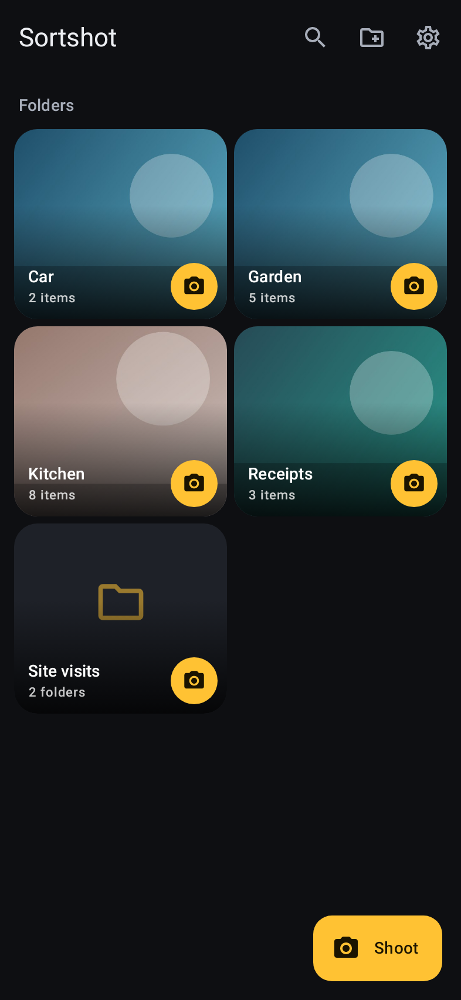
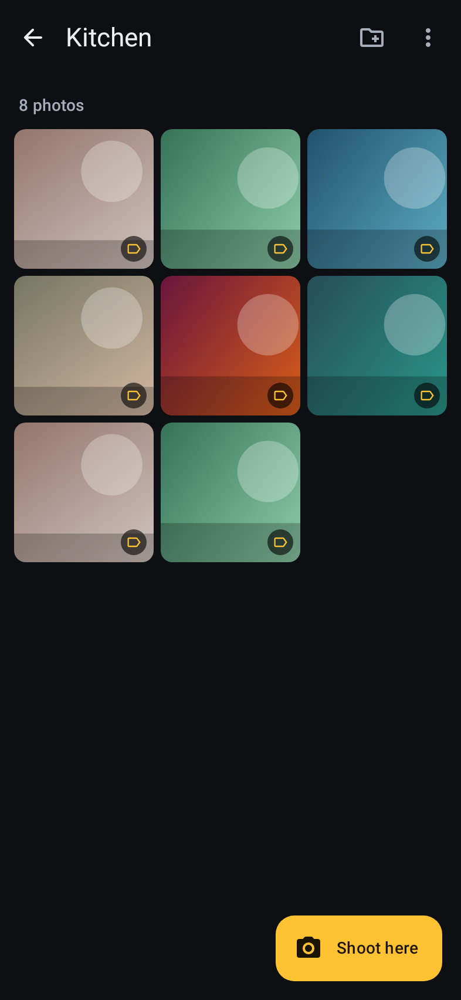
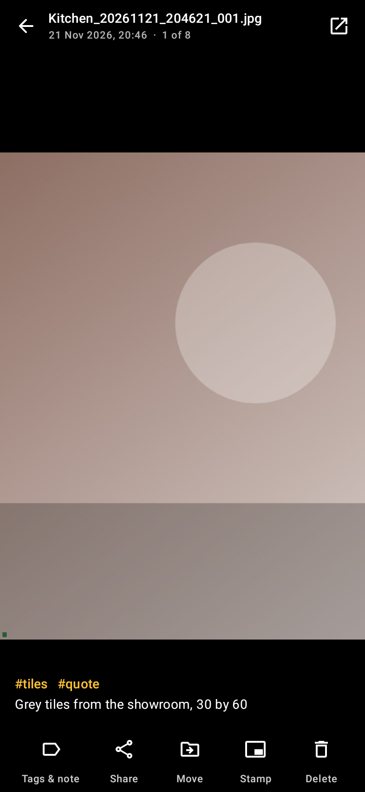
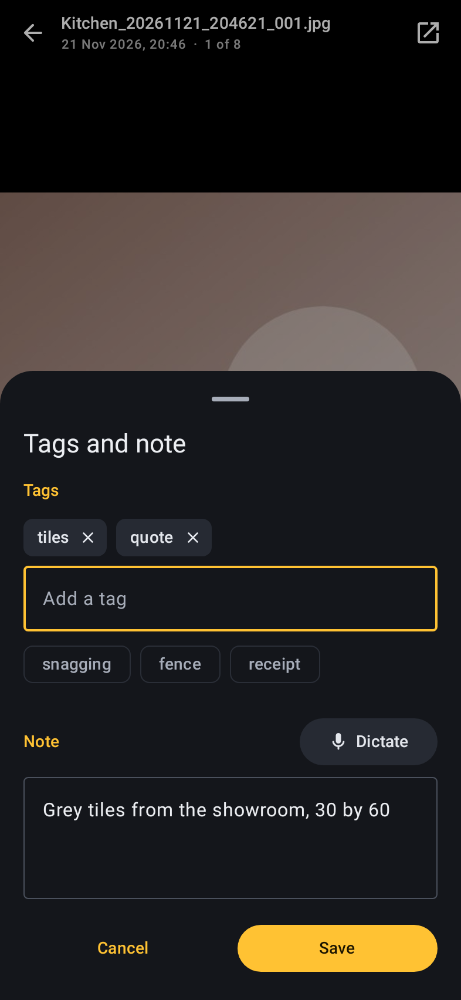
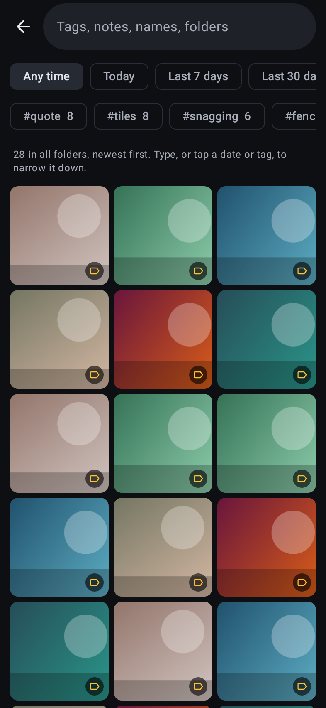
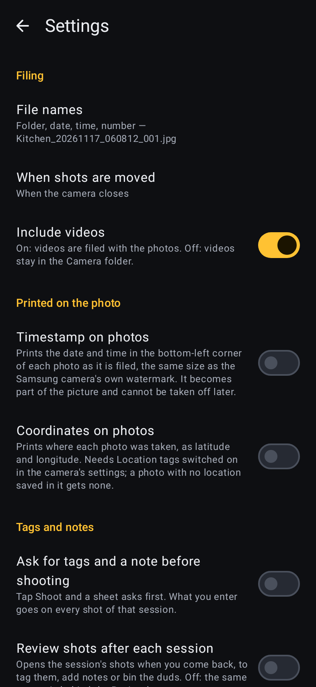
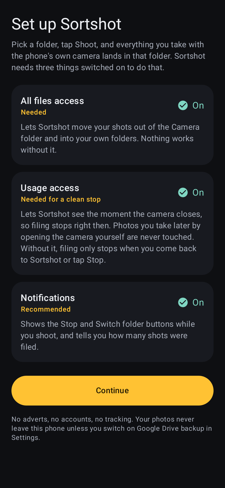

Pick a folder. Tap Shoot. Your photos land in it.
On a Samsung phone every photo goes into one Camera folder. Sortshot fixes that without replacing the camera: choose a folder, tap Shoot, and the phone's own camera opens with every mode it has.
When you close it, what you took is in your folder, with any tags and notes you added. Nothing else on the phone is touched.
Download for AndroidHow to install
- Version 1.3
- Android 13 or later
- 3.9 MB
Free, with nothing to unlock. No adverts, no account with the developer, no tracking. Compare or read the release notes.
Chrome may say the file might be harmful. It shows this for app files that do not come from Google Play. Choose Download anyway.

- No subscriptionEvery feature is in the free app.
- No advertsNone in the app and none on this site.
- Your own cameraEvery mode your phone has, nothing changed.
- One copyShots are moved, not copied.
A look inside
These are the real screens, drawn from the app's own code with made-up photos. Swipe or scroll sideways to see them all.






How it works
There is nothing to buy and no account to make. Sortshot moves what you shoot into the folder you chose.
Pick a folder
Make folders and sub-folders in DCIM › Sortshot, or use one you made before.
Tap Shoot
The phone's own camera opens, with every mode it has, for photos and video.
Close the camera
What you took is filed in your folder, with readable names, tags and notes.
Everything is in, and all of it is free
Nothing below is held back for a paid tier, because there is no paid tier.
Filing
- Your camera, your folders
- The phone's full camera, for photos and video. Shots are moved, not copied, so the Camera folder stays clear.
- Only what you shot through it
- Filing stops the moment the camera closes. Photos you take by opening the camera yourself are never touched.
- Folders and sub-folders
- They live in DCIM › Sortshot, so each one shows as an album in the Gallery, with names you can read on a computer.
- One tap from anywhere
- A home-screen shortcut for each folder, a quick-settings tile, and a Switch folder button while you shoot.
Finding
- Tags and notes
- On one photo or many at once. Say a note instead of typing it, or set tags before you shoot.
- They travel with the photo
- Written into JPEG files in the standard place, so they are still there on a computer or in Drive.
- Search
- Across every folder, by tag, note, file name, folder or date.
Sharing
- Timestamp on the photo
- Switch it on and the date and time, and the place if you like, are printed in the corner as each photo is filed.
- Stamped copies
- A copy with the date, folder, note, tags or location printed on it. The original stays as it was.
- PDF report and zip
- A folder as a PDF, two photos to a page with their notes, or as a zip with a list of every photo's tags and notes.
Keeping
- Google Drive backup
- Chosen folders copied to a Sortshot folder in your own Drive, over Wi-Fi. Sortshot sees only the files it put there.
- Hide from the Gallery
- A switch for each folder, or for all of them.
- A 30-day bin
- Anything you delete in Sortshot waits 30 days and goes back with one tap.
Your photos are your business
No servers
Sortshot has no accounts and no servers. The developer receives nothing from the app.
Your own Drive
Backup is off until you connect it, and then goes only to your own Google Drive.
No ads, no tracking
There is no advertising, analytics or tracking, in the app or on this site.
Installing and updating
Sortshot is not on Google Play, so your phone asks a couple of extra questions the first time.
Download the app file
Tap Download on your phone. The file is called Sortshot.apk and is about 3.9 MB. If Chrome says the file might be harmful, choose Download anyway.
Allow the install
Open the file. The first time, Android asks you to allow your browser to install apps. Allow it, go back and tap Install. If Google Play Protect steps in, choose More details, then Install anyway.
Updating later
Sortshot tells you when a newer version is out. Install the new file over the old one and everything you have saved is kept.
Version 1.3, released 18 November 2026. See the release notes, or check your download.
Questions
Is Sortshot really free?
Yes. There is no paid version, no subscription and no adverts. See the comparison.
Is it a camera?
No. It opens the camera already on your phone, with every mode it has, so nothing about how your photos look changes.
Does it touch photos I take without it?
No. Filing starts when you tap Shoot and stops the moment the camera closes.
Where do my photos go?
Into folders in DCIM › Sortshot, so each folder is also an album in the phone's Gallery.
Why does it ask for all files access and usage access?
All files access lets it move your shots out of the Camera folder. Usage access lets it see the moment the camera closes. Nothing about your app use is kept or sent.
How do I switch on usage access?
Android locks it for apps downloaded outside the Play Store. Try to switch Sortshot on once, then open Settings, Apps, Sortshot, tap the three dots and choose Allow restricted settings. The app shows these steps.
Is Google Drive backup needed?
No. It is off until you connect it, and copies only the folders you choose. A photo deleted on the phone stays in your Drive.
How do I update Sortshot?
The app tells you when a new version is out. Download it from this site and install it over the old one; your folders, tags and notes stay.
Every photo in the right folder, the moment you take it
Free, with no adverts and nothing to unlock. Made by the developer of several other free Android apps: see them all.